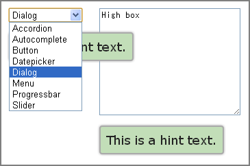

Alter Position jQuery UI Tooltip
Alter Position jQuery UI Tooltip Plugin to alters position according to the situation.
The default position is under the element. It looks best position. But, it is not sometimes.
For example, it overlap pulldown list of select, or it is too lower position under the high textarea.

This plugin alters position by specified conditions. (e.g. height, tag-name)
Usage
- Load the
jquery.ui.tooltip.altposition.jsscript file after loadingjquery.ui.tooltip.jsetc. - The
altPositionObject is added to Tooltip options.
The position is altered to altPosition.position (alternative option.position Object of Tooltip) when any following conditions.
- The tag-name of the element is
altPosition.tagName. -
outerWidthof the element is greater than or equal toaltPosition.minOuterWidth -
outerWidthof the element is less than or equal toaltPosition.maxOuterWidth -
outerHeightof the element is greater than or equal toaltPosition.minOuterHeight -
outerHeightof the element is less than or equal toaltPosition.maxOuterHeight -
altPosition.callbackFunction returnstrue
NOTE: These are joined by OR. (The position is altered if one or more conditions.)
Example
$('input,textarea,select').tooltip({
altPosition: {
minOuterHeight: 60,
tagName: 'select',
callback: function() { return this.element.val().length > 20; },
position: {my: 'left+15 top', at: 'right top', collision: 'flipfit'} // Right side
}
});